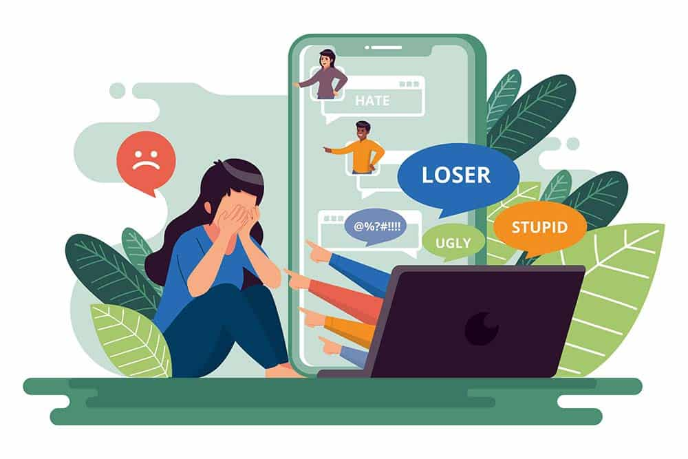

El ciberacoso es una forma de acoso que se realiza a través de medios digitales. Puede incluir una amplia gama de comportamientos, como el acoso, la intimidación y amenazas en línea. Este tipo de acoso puede tener un impacto emocional significativo en los jóvenes, especialmente porque Internet permite un grado de anonimato que puede hacer que los acosadores se sientan más empoderados para actuar agresivamente.
El ciberacoso puede darse en diversas plataformas de comunicación en línea, incluyendo redes sociales, foros de discusión, sitios de videojuegos y aplicaciones de mensajería instantánea. A menudo, el ciberacoso puede continuar durante un período prolongado de tiempo, ya que el acosador puede tener fácil acceso a su objetivo a través de medios digitales.

Tipos de ciberacoso
Existen varios tipos de ciberacoso, que incluyen pero no se limitan a los siguientes:
Acoso en línea: Involucra la repetición de comportamientos maliciosos para causar daño emocional a la víctima. Ejemplos de este comportamiento incluyen comentarios ofensivos, amenazas e intimidaciones.
Doxxing: Es cuando se publica información personal o confidencial sobre una persona sin su consentimiento, con la intención de causar daño, vergüenza o miedo.
Exclusión en línea: Este tipo de ciberacoso ocurre cuando una persona es deliberadamente excluida de un grupo en línea.
Cyberstalking: Se refiere a la persecución en línea, a menudo acompañada de amenazas a la seguridad personal de la víctima.
Es importante notar que estos son solo algunos ejemplos de ciberacoso. Éste puede tomar muchas formas y puede ser altamente personalizado para causar el mayor daño posible a la víctima.
Consecuencias del Ciberacoso
El ciberacoso puede tener consecuencias graves para la salud mental y física de las víctimas, así como para su autoestima y dignidad:
Salud mental: Ansiedad, depresión, ideaciones suicidas, irritabilidad, trastornos de sueño, dificultades para concentrarse
Salud física: Dolores de cabeza, náuseas, dolores de estómago frecuentes
Autoestima: Baja autoestima, que puede llevar a la depresión y otros problemas de salud mental
Aislamiento social: Aislamiento de amigos y familiares, desconexión de la comunidad
Comportamiento: Comportamientos violentos, uso de sustancias como alcohol y drogas
Motivación: Pérdida de motivación para hacer las cosas que normalmente te gustan
Dignidad: Afectación de la dignidad de manera pública, ya que otras personas pueden contribuir a la ridiculización
Prevención del Ciberacoso
Para prevenir el ciberacoso, es fundamental educar a padres, educadores y empleadores sobre cómo detectarlo y abordarlo. Se deben promover estrategias para fomentar la empatía, la tolerancia y el respeto online. Además, es importante utilizar herramientas tecnológicas y de seguridad en línea para proteger a los usuarios y promover un entorno en línea seguro y positivo. Algunas recomendaciones incluyen:
Educar sobre el uso responsable de la tecnología.
Fomentar la empatía y el respeto en línea.
Reportar incidentes de ciberacoso a las autoridades correspondientes.
Asistente Inteligente
¿Tienes alguna duda sobre el tema? Nosotros te ayudamos⭐.
Puedes preguntar lo siguiente:
¿cómo lo podemos diferenciar de el acoso tradicional?
¿cómo puedo denunciar el ciberacoso?
¿cómo puedo impedir el ciberacoso sin dejar de ingresar a internet?